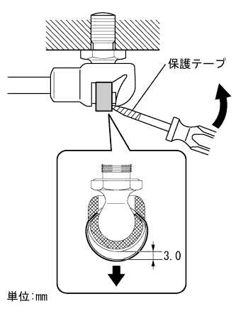
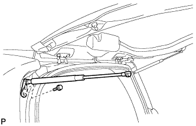

バックドアステーASSY 取り外し |
| 1. バックドア ステーSUB-ASSY LH取りはずし |
|  |
Using a flathead screwdriver with a protective tape, the plate spring is about 3 mm downward and separated the upper part of the backdoor stee (backdoor side).
|  |
Remove the two bolts and remove the backdoocyst ASSY LH.